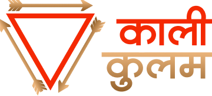
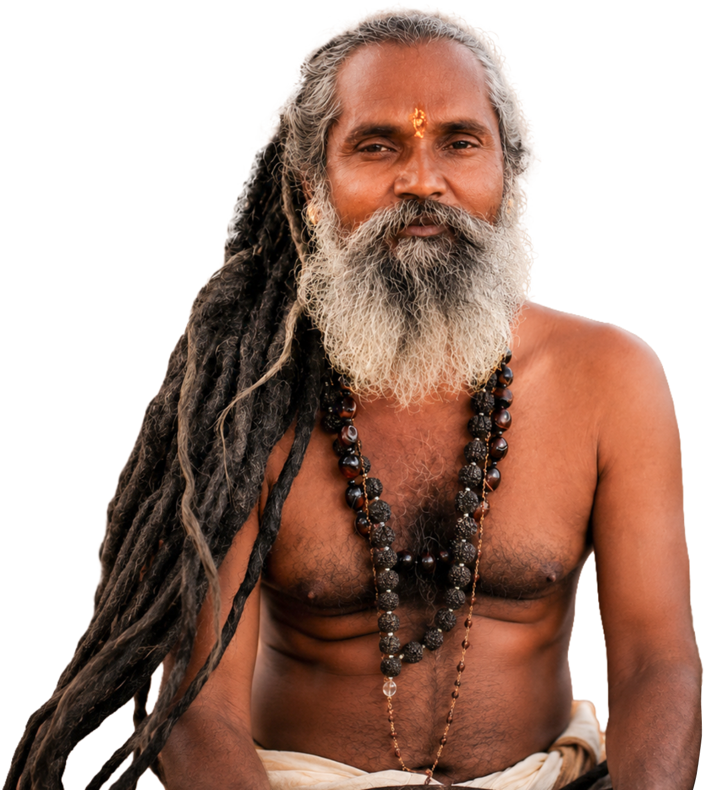
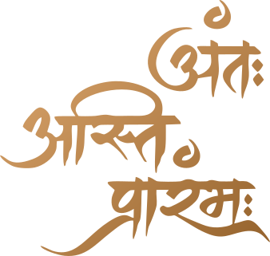
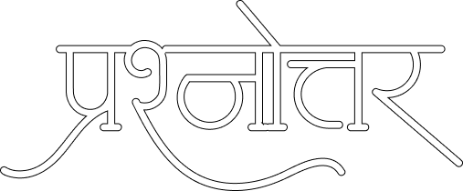

तंत्र शास्त्र के सूत्र "गृहस्थो नास्ति मे तुल्य:" (गृहस्थ के समान कोई नहीं) को चरितार्थ करते हुए, माँ शारदा के परम उपासक पूज्य गुरुदेव मांगीलाल भील एक कुशल गृहस्थ और अडिग साधक का जीवंत उदाहरण हैं।
मोरड़ी मावली की पावन भूमि पर रहते हुए, वे प्रकृति के पंचभूतों की साधना और जल-जंगल-ज़मीन के संरक्षण को ही अपनी ईश्वरीय आराधना मानते हैं। उन्होंने अपने आचरण से यह सिद्ध कर दिया है कि सच्ची साधना के लिए वन जाने की आवश्यकता नहीं, बल्कि समर्पित मन की आवश्यकता होती है।
खेत की माटी हो या घर की रसोई - गुरुदेव के लिए प्रत्येक कर्म माँ की ही सेवा है। उनका जीवन उन सभी गृहस्थों के लिए एक आलोक-स्तंभ है, जो सांसारिक दायित्वों के साथ आध्यात्मिक मार्ग पर चलना चाहते हैं।

विधि, ध्वनि और रूप – तीन शक्तियाँ, एक मार्ग
तंत्र न कोई रहस्य है, न कोई भय की विधा। यह उस शक्ति की समझ और जीवन में उतारने का मार्ग है। जीवन का हर अनुभव, सुख हो या दुख, परिवार हो या एकांत, सब साधना है।

मंत्र वह दिव्य ध्वनि है जो श्वास के आरंभ से विद्यमान है। प्रत्येक मंत्र एक विशेष शक्ति का वाहक है। जब इसे सही विधि, सही भाव और सही समय पर उच्चारित किया जाता है, यह जीवन को बदलने की क्षमता रखता है।
यंत्र एक पवित्र ज्यामितीय संरचना है जिसमें देवी-देवताओं की शक्ति को संचित किया जाता है। यह केवल एक चित्र नहीं, यह एक जीवंत ऊर्जा केंद्र है। घर में, व्यापार में और जीवन के हर क्षेत्र में यंत्र एक अदृश्य सुरक्षा कवच का कार्य करता है।

दान केवल धन नहीं - यह आपकी श्रद्धा का प्रतीक है। जब आप काली कुलम में अर्पण करते हैं, तो आप केवल एक संस्था को नहीं, बल्कि एक जीवंत साधना परंपरा को जीवित रखते हैं।

काली कुलम में 'काली' का अर्थ है स्त्री और 'कुलम' का अर्थ है धारणा - अर्थात स्त्री शक्ति का कुल।
यह एक ऐसी आध्यात्मिक और सामाजिक संस्था है जो माँ काली की असीम ऊर्जा, करुणा और न्याय के सिद्धांतों पर आधारित है।
काली कुलम वह स्थान है जहाँ जाति, पंथ या भेदभाव का कोई स्थान नहीं - केवल प्रेम, भक्ति और निस्वार्थ सेवा।